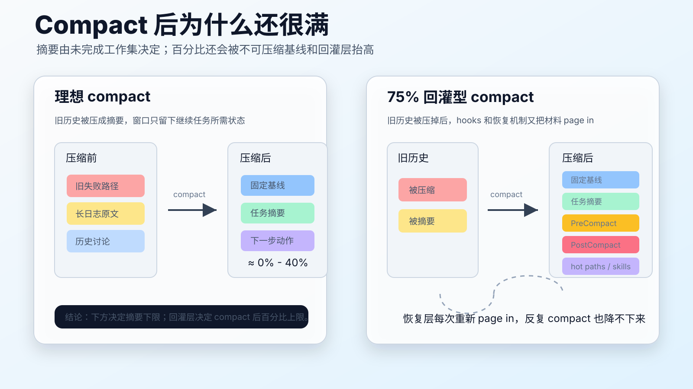

上下文换入换出：下一代 scaling
上一篇说裸模型像抽卡，因为它把概率输出直接暴露给用户。抽卡感解释的是一次任务里的波动；上下文问题解释的是长程任务为什么会累、会乱、会跑偏。
LLM 和人都有一个共同约束：它们都在上下文里工作。区别在于，模型的上下文 refill 是读写问题，人的上下文 refill 是注意力问题。机器可以把一段摘要重新塞进 message array，人却要重新把目标、材料、约束和下一步动作装回工作记忆。这个过程有磨损。
人也有 context window
把 LLM 说成统计模型是对的，但这种说法容易遮住它和人的相似工作形态。人从长期通识积累到领域学习，再到职业训练和反馈，很像预训练、继续预训练和后训练的分层。拥有推理能力以后，人也不是在真空中推理，而是在一个被任务材料填充出来的上下文里推理。
上下文质量决定注意力预算能不能被调动。APA 对 multitasking 的综述把任务切换带来的时间成本叫 switching costs。换到工程语境里，context switching 的问题不是“同时做两件事”这么简单，而是每次切换都要重新加载一组任务状态：目标是什么，做到哪里，哪些约束不能破，下一步该看哪个文件。
人脑不能像计算机一样无磨损地 page in。频繁切换会把深度工作预算消耗在重建现场上，而不是消耗在有效判断上。一天里能稳定维持的高质量上下文是有限的。
长窗口不是无限工作台
LLM 的上下文窗口看起来比人的工作记忆大得多，但它不是无限工作台。《Lost in the Middle》发现，长上下文模型对信息位置敏感：相关信息放在开头或结尾通常更容易被用上，放在中间时表现会明显下降。长窗口解决了“能不能塞进去”，没有彻底解决“塞进去以后能不能用好”。
append-only message array 还有一个工程缺陷：它很容易积累噪声。一次长程 coding 会话里，旧错误、失败命令、废弃方案、临时猜测、过时文件内容都会留在上下文里。模型并不总能稳定地区分哪些是历史垃圾，哪些是当前证据。
所以关键问题不是窗口多长，而是当前工作集有多干净。
flowchart TB
A[外部世界: repo / docs / logs / memory] --> B[选择 Select]
B --> C[工作集: 当前上下文窗口]
C --> D[模型推理与工具调用]
D --> E[结果 / 观察 / 失败]
E --> F[写回 Write]
F --> A
E --> G[压缩 Compress]
G --> A
H[隔离 Isolate: 子 Agent / 新会话] --> C记忆系统的本质是换入换出
成熟的长程智能不是把所有东西都记住，而是把有限上下文接成连续工作边界。外部设施承担四类动作：遗忘、压缩、检索、索引。人类靠笔记、书、目录、搜索、日程和社会分工做到这件事；Agent 靠 memory、retrieval、spec、tests、session summary 和 skills 做同一件事。
Anthropic 把 context engineering 的基本动作归纳为 write、select、compress、isolate，很适合当作这个问题的工程骨架。Write 把重要状态写到外部，Select 在需要时选择相关信息，Compress 把长轨迹压成可用摘要，Isolate 用子 Agent 或新会话保护上下文纯度。
借用操作系统的词，这可以叫 context paging。窗口内 token 是工作集，外部记忆是磁盘，检索和摘要是 page in，压缩、归档和蒸馏是 page out。优化目标不是保存一切，而是在下一次推理前，把最该进入工作集的信息换进来，把会污染注意力的信息换出去。
Compact 不是续命，而是清场
很多系统把 compact 理解成“把旧上下文压短一点，好让会话继续变长”。这个理解只说对了一半。Compact 的核心价值不是延长一条越来越重的 message array，而是丢弃已经完成的任务，把未完成任务、当前状态、关键约束和下一步动作留下来。
换句话说，compact 应该服务于任务状态，而不是服务于聊天历史。已完成的子任务只需要留下结论、证据位置和可追溯提交；未完成的任务才需要留下目标、阻塞点、候选路径和验证方法。这样下一轮打开窗口时，模型看到的是“还需要推进什么”，而不是“之前发生过什么”。
这也解释了为什么新任务开启时，不应该只依赖上下文窗口里的历史材料。一个有工具能力的 Agent 可以从外部重新取数：读 spec，查 git diff，看测试结果，检索文档，打开日志，读取 issue。把信息留在外部，再按需 page in，通常比把所有历史不断 refill 进窗口更稳。
不断 refill 上下文窗口有两个隐性代价。第一是价格抬高，旧 token 每轮都要重新进入计算。第二是容错率下降，窗口里旧错误、旧假设和旧路径越多，模型越容易把历史噪声误当成当前证据。真正可持续的长程 Agent，不是靠把窗口越填越满，而是靠外部状态、可检索环境和 compact 规则，把窗口反复清成一个干净的工作集。
这条原则也适用于基本材料。SOP、接口文档、设计记录、术语表、日志、测试结果、项目记忆，不应该因为“可能会用到”就常驻窗口。只要模型能主动检索和读取，它们就更适合待在外部，等任务真正需要时再被 page in。Skill 的渐进式加载只是这个原则的一个具体形态：入口常驻，细节按需进入上下文。
为什么 compact 后有时是 0%，有时是 40%
Claude Code 的 /compact 很适合作为这个问题的实物样本。官方文档对它的定义很克制：/compact 会把目前会话总结成摘要来释放上下文，并且可以接受额外的聚焦指令。它不是 /clear。/clear 是清空会话历史、开始新任务；/compact 是同一任务还要继续，所以要保留足以接着干活的状态。
这意味着 compact 后的百分比不应该被理解成“压缩器有没有把历史清干净”，而应该被理解成“压缩后当前工作集还有多大”。如果某个状态栏显示的是已用比例，0% 近似表示压缩后只剩很小的基线；40% 表示压缩后仍有四成窗口被工作集占用。如果状态栏显示的是剩余比例，读法要反过来：0% 剩余通常意味着窗口仍然接近满载，需要检查 /compact 是否失败、是否有巨大不可压缩基线，或摘要本身是否过大。最可靠的办法不是猜百分比含义，而是在 compact 前后各跑一次 /context all，看 token 被哪些类别吃掉。
Claude Code compact 后不可能只留下用户可见的那段摘要。官方的 context window 文档把“压缩后仍会存在的东西”列得很清楚：system prompt 和 output style 不属于 message history，不会因为 compact 消失；项目根目录的 CLAUDE.md、unscoped rules 和 auto memory 会从磁盘重新注入；被调用过的 skill body 会在预算内重新附着，单个 skill 最多保留 5,000 token，所有 skill 合计最多 25,000 token；path-scoped rules 和嵌套目录里的 CLAUDE.md 则会等到再次读取匹配文件时重新加载。
所以 compact 后的窗口有一个“不可压缩地板”。这个地板由 system prompt、输出风格、项目根 CLAUDE.md、auto memory、MCP 工具名、skill 描述、最近被重新注入的 skill body 等组成。一个干净小仓库，地板很低，compact 后看起来接近 0%。一个重度配置的仓库，根 CLAUDE.md 很长、MCP 很多、skill 很多、auto memory 很厚，即使会话历史被压成很短的摘要，剩余工作集仍可能显得很大。

40% 还可能来自另一种正常情况：未完成任务本身就很大。一次跨文件重构如果还没有结束，摘要里必须保留改过哪些文件、哪些测试失败、哪些约束不能碰、哪些方案已经被否决、下一步从哪里继续。一个好的 compact 不应该为了把百分比压低而丢掉这些状态。它应该把已完成的探索、废弃输出和历史寒暄删掉，把未完成工作的工作集留下。
还有几类现象会让 compact 后的数字偏高：
- 任务中调用过多个大 skill。Claude Code 会把最近的 skill body 按预算重新附上，旧 skill 超出总预算才会被丢弃。
- 根
CLAUDE.md或全局规则过长。官方建议CLAUDE.md保持精简，因为它会占据每一轮上下文空间。 - 读过大量文件后，摘要不得不保留文件状态和关键差异。文件内容本身可能被压掉，但“哪些文件现在重要”会留下。
- 运行过长测试、长日志或大 diff，并且当前任务还依赖这些输出。没有写入外部文件或测试报告时，compact 只能把关键信息压进摘要。
- 使用
/rewind的局部 summarize 时，某些区段会被保留为原文，某些区段才被压缩。这个机制比全量 compact 更精细，但也更容易让压缩后比例不直观。 - compact 触发得太晚。官方错误参考里有一种失败情形：窗口已经满到连 compact 自己生成摘要所需空间都不够，这时会出现 “Conversation too long” 一类错误。即使没有失败，临近硬上限再压缩，也更容易得到臃肿摘要。
这个现象反过来修正了 compact 的理论定义。Compact 不是“把已完成任务删除，把未完成任务留下”这么简单；它实际在做三层过滤：删掉已经完成且可从外部复现的轨迹，保留未完成任务的最小可执行状态，再重新注入系统认为应该常驻或可继承的外部上下文。0% 和 40% 的差异，往往就来自第三层。
更稳的使用方式是把 compact 当成一次显式交接，而不是按一个命令后让模型自由决定。长任务中可以这样写：
1 | |
如果同类任务反复出现，可以把压缩偏好写进 CLAUDE.md，例如“compact 时保留完整修改文件列表和测试命令”。如果新任务已经和旧任务无关，则不该 compact，而该 /clear。已完成任务应该沉到 git commit、issue、spec、测试结果、session note 或外部 memory 里；下一次需要它时再检索回来。
75% compact 不掉：被压不掉的不是历史，而是回灌层
有一种更极端的实战现象：连续 compact 好几次，窗口仍然停在 75% 左右。日志里反复出现 PreCompact、PostCompact、项目记忆恢复、状态文件重读、hot paths、plan reference、skills restored。这时问题通常已经不是“会话摘要太大”，而是 compact 周围的恢复机制在每次压缩后又把上下文重新灌满。
可以把这类日志拆成四层。
第一层是 compaction summary。它负责把旧消息压成摘要。只要还有未完成任务，这层就不可能为零。
第二层是 PreCompact 注入。某些 hook 会在 compact 前生成一段“压缩后必须保留”的 project memory，例如项目技术栈、测试命令、hot paths、用户指令。Claude Code 官方文档允许 PreCompact 在压缩前运行自定义逻辑；agent loop 文档也明确说，CLAUDE.md 可以包含总结时必须保留的指令。只要 hook 返回的内容被放进系统消息或额外上下文，它就会变成强保留对象。
第三层是 PostCompact 回灌。Claude Code 的 hooks 文档说明，PostCompact 会在压缩完成后运行，适合记录 summary 或更新外部状态。很多插件会借这个时机重新注入关键指令、状态摘要或 live view 信息。问题在于：这些内容发生在 compact 之后，不属于“刚被压缩掉的旧历史”。它们是新鲜上下文，本轮 compact 没机会再压它。
第四层是自动恢复的外部材料。日志里的状态文件重读、关键设计文档引用、核心源码文件重读、环境文件读取、plan file reference、skills restored，都属于这层。尤其是 hot paths 机制很容易形成正反馈：某个状态文件因为每次 compact 后都被读取，于是访问次数越来越高；访问次数越高，下次 compact 越可能把它当成 hot path 恢复。结果是 compact 本来想清场，却把同一批文件一次次重新拉回工作集。
这类 75% 现象可以写成一个公式：
1 | |
如果后面三项很大，反复 /compact 不会下降。每次 compact 都会重新触发这些 hook，重新读这些文件，重新恢复这些 skill。看起来像“compact 不掉”，实际是“刚压掉旧历史，又立刻 page in 了一整套恢复包”。
这种情况下，正确动作不是继续 compact，而是治理恢复层。
PreCompact只保留指针，不保留大段材料。比如保留“当前状态在某文件，必要时读取”，而不是自动把 200 行状态文件注入窗口。PostCompact保持幂等和去重。同一份 project memory 已经注入过，就不要在下一次 compact 后再注入一份等价文本。- hot paths 要有衰减或黑名单。状态文件、日志文件、env 文件这类“因为恢复机制而热”的路径，不应该反过来驱动下一轮恢复。
- 不要在 compact 恢复阶段自动读取
.env.*。环境文件应当留在外部，只在任务明确需要时读取，而且要避免把密钥、token、cookie 带进长期上下文。 - skills restored 要有预算。最近用过的 skill 可以恢复入口和摘要，不一定恢复完整 body；大 skill 更适合按需加载。
- 任务完成后用
/clear，不要继续 compact。同一会话里 compact 越多，越容易把“恢复机制产生的上下文”误当成“任务本身需要的上下文”。
这个案例把前面的定义再推进一步：未完成任务决定摘要下限，但 compact 后百分比还取决于恢复层上限。摘要是“任务还需要什么”的压缩表示；恢复层是“系统觉得你永远需要什么”的自动注入。75% 不掉，通常不是任务本身有 75% 那么复杂，而是恢复层没有被设计成按需加载。
四层记忆可以重新理解
本博客前文把智能体记忆按写入主体分成四层：训练数据、对话内数据、跨会话数据、外部世界数据。也有另一篇 Hermes 横评用 L0-L4 描述记忆成熟度：L0 无状态，L1 会话持久化，L2 项目上下文注入，L3 跨平台会话与技能注册，L4 封闭学习回路。
这两套模型并不冲突。前者回答“信息从哪里来”，后者回答“系统能自动处理到什么程度”。如果排除 L0 无状态，L1-L4 正好是一条从手工 refill 走向自动 context paging 的路线。
CoALA 也提供了相近的理论入口：language agent 不只是 LLM，还包括 memory、action space 和 decision-making procedure。记忆不是一个单一仓库，而是工作记忆、语义记忆、情节记忆、程序性记忆的组合。能检索、能行动、能决定何时检索，才是长程 Agent 和一次性聊天的差别。
下一代 scaling 不只在模型里
过去的 scaling 主要押注更大模型、更多数据、更长上下文、更高推理 token。下一阶段的 scaling 还会发生在上下文换入换出算法里。
同一个模型，如果每次拿到的是噪声很大的历史堆积，它会像一个被会议纪要淹没的人；如果每次拿到的是清晰目标、关键证据、当前状态和验证方法，它就像一个刚接班但交接材料极好的工程师。底层模型没变，工作能力会显著不同。
Context paging 的最终目标，是让有限窗口连接出近乎无限的工作边界。模型负责在当前工作集内推理，Harness 负责管理工作集如何生成、如何清理、如何继承、如何验证。
相关文章
- LLM Harness 路线图：从抽卡模型到可验证工程系统
- 裸模型为什么像抽卡
- 谁在记住你：Hermes、OpenClaw、Claude Code 等主流智能体的记忆架构深度横评
- 智能体记忆全景综述：从短时长时之分到向量库回归文件系统
参考资料
- APA: Multitasking: Switching costs
- Liu et al.: Lost in the Middle: How Language Models Use Long Contexts
- Anthropic: Effective context engineering for AI agents
- Claude Code Docs: Explore the context window
- Claude Code Docs: Commands
- Claude Code Docs: Hooks reference
- Claude Code Docs: Automate workflows with hooks
- Claude Help Center: Models, usage, and limits in Claude Code
- Claude Code Docs: Manage costs effectively
- Claude Code Docs: Best practices for Claude Code
- Sumers et al.: Cognitive Architectures for Language Agents
- Shinn et al.: Reflexion: Language Agents with Verbal Reinforcement Learning